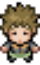

Presentation du jeu
Pokemon Genesis est un fan game de la saga de jeu connue dans le monde entier: Pokemon. Deux amis de 1ere en spécialité NSI on décidé comme projet de recréer une version simpliste de leur jeu préféré.
Ce jeu présente une carte sur laquelle le joueur peut se deplacer librement. Il peut rentrer dans des maisons comme le laboratoir ou attend le professeur Saule. Au Nord Est de la carte se trouve le joueur rival du dresseur que l'on incarne: Kal. On peut aller le voir et le combattre, attention, il est coriace! Des ameliorations du jeu sont prévue pour que l'on puisse augmenter en niveau, acheter des potion, combattre des pokemons sauvages, debloquer des nouvelles attaques et meme attraper de nouveaux pokemons.
Tous les design des entités du jeu ont été realisés par Luc, meme les musiques! Les pokemons sont notres et nous sommes fiers d'eux. On vous attend avec impatience que vous puissiez jouer au jeu!